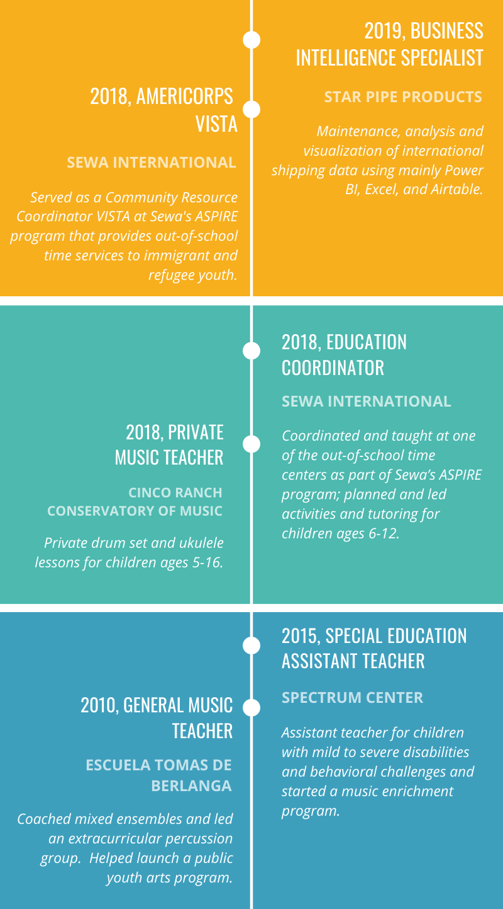

Andrew Roberts
Profile/Portfolio
About Me
In my personal and professional life, I most enjoy opportunities where I can perform a role of service. To me it’s not just a personal inclination to work in service to others, but a duty every individual must carry out. The great teachers of East and West always tell us of the importance of selfless service not only as a duty in our life, but as a means of purifying and strengthening ourselves.
After graduating from Berklee College of Music in Boston, MA where I studied Music Education and Performance, I’ve had the opportunity to be of service in a variety of roles in education and the non-profit sector. I currently live in Houston, TX.
I enjoy applying Agile project management and Lean methods to non-profit work I'm currently finishing my Green Belt certification in Lean Six Sigma.
Experience
He’s a person who transmits so much peace to those around him. He’s able to convince you that you’re doing the right things, and he always makes you feel better. He’s really wise and always has something helpful to say...Undoubtedly, he’s one of the best teachers I’ve ever had and the one of the best people I’ve ever met.
-Kelly, Former Student
Andrew has a lot of patience with beginners and knows exactly how to provide the tools they need to learn and practice the subject.
-Martin, Former Student
As Director of the Scalesia Foundation, I was able to evaluate closely the work of Andrew, who demonstrated great commitment to education with a search for creative alternatives...His capacity to propose solutions for academic problems, logistics and human resources allowed his presence to have a great impact and palpable results that were applauded by parents and teachers of the institution. Besides being a great teacher, Andrew is an exceptional human being that, among other things, headed the organization of extracurricular courses in Chi Kung and percussion, without receiving much more in return than the satisfaction of enriching the island community.
-Reyna Oleas, MBA

Percussion group waiting to play during the Galapagos Triathlon

Final student concert before leaving Galapagos

Filming with West African Ensemble at Berklee
Volunteering
Here are some of the organizations I've had the pleasure to volunteer with: